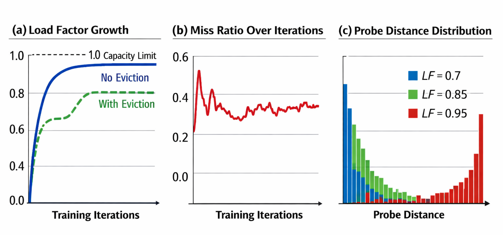
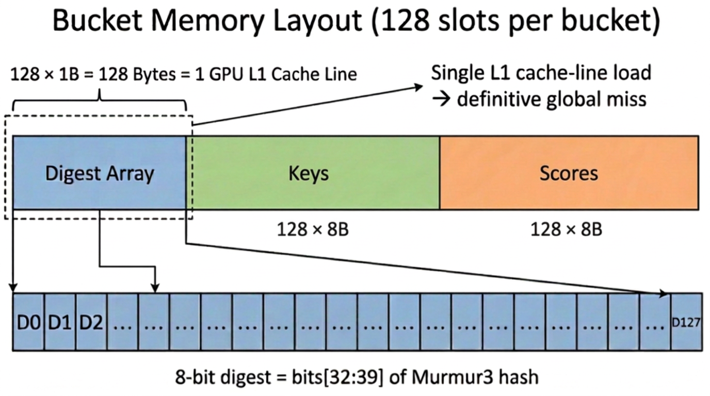

[SIGMOD'27] HierarchicalKV: A GPU Hash Table with Cache Semantics for Continuous Online Embedding Storage 阅读笔记
#摘要
传统的 GPU 哈希表会保留每一个插入的键 – 这种字典式的设计方式会浪费宝贵的 HBM 资源，因为当哈希表的大小超过单个 GPU 的容量时，这种处理方式就会变得不可行。我们打破了这一假设，采用了基于缓存语义的存储方式，其中策略驱动的淘汰操作成为了核心功能。我们提出了 HierarchicalKV（HKV）这一通用 GPU 哈希表库，它的正常运行模式基于缓存语义：每次完整的更新或插入操作都会通过淘汰或拒绝操作来直接修改数据，而不是通过 Rehash 处理或因容量限制而导致失败。 HKV 结合了四种核心机制：与缓存行对齐的桶结构、基于评分的在线更新操作、基于评分的动态双桶选择机制，以及三重组并发处理机制。此外，HKV 还采用了分层键值分离的设计，从而能够在超出 HBM 容量的情况下实现扩展。在 NVIDIA H100 NVL GPU 上，HKV 每秒能够处理高达 39 亿个键值对。在负载因子为 0.50–1.00 的情况下，性能表现有 5% 的波动。与 WarpCore 相比，HKV 在吞吐量上高出 1.4 倍；在基于间接处理的 GPU 基准测试中，性能提升可达 2.6–9.4 倍。自 2022 年 10 月开源以来，HKV 已被集成到多个开源推荐系统中。
#1. 引言
现代的推荐、搜索和广告系统（Naumov 等人，2019 年）依赖于深度学习模型。这些模型中的 Embedding 表负责将稀疏特征映射到密集向量上，这一过程占据了大量的内存资源。通常，这些 Embedding 表占用的内存远远超过单颗 GPU 所能承受的最大内存容量（例如，1B 个 64-dim float32 key 会占用 ~256GB 的内存，而一块 NVIDIA H100 NVL 卡上只有 96GB）。持续的在线训练进一步增加了内存使用的压力，因为需要不断处理新的键信息，而内存预算却始终有限。
所有被广泛使用的 GPU 哈希表 – 如 cuCollections（NVIDIA，2020 年）、WarpCore（Jünger 等人，2020 年）、BGHT（Awad 等人，2023 年）、WarpSpeed（McCoy 和 Pandey，2025 年）以及 Hive（Polak 等人，2025 年）-- 都采用字典语义模型：每个插入的键都必须被保留下来。当负载因子接近 1.0 时，查询链会延长，吞吐量会下降，系统不得不进行 Rehash 处理，否则就会失败。这些限制是字典语义模型固有的：只要要求保留每个键，那么在高负载情况下的性能下降以及外部维护工作就难以避免。我们的测量结果显示，当 λ 接近 1.0 时，查找吞吐量会下降 31% 到 100%（参见第 5.2 节），这使得字典语义的哈希表不适合用于需要持续填充的 Embedding 缓存系统。
我们注意到，将存储功能建模为 cache 比建模为 dictionary 更为合适：幂律访问模式意味着只需保留高价值的条目，而淘汰低价值的条目则有助于保持模型的稳定性。由于内存资源有限，淘汰低价值条目成为必然且频繁发生的操作。这种从字典语义到缓存语义的转变，从根本上改变了设计约束：完整的表不再被视为错误状态，而是正常的运行状态。就像 B 树索引（字典语义）与缓冲池（缓存语义）之间的区别导致了数据库系统中不同的并发处理与替换策略一样，同样的语义划分也导致了 GPU 哈希表设计的根本差异。采用缓存语义开辟了新的设计空间，但同时也带来了四个具体挑战（参见第 2.4 节）：
- 将每个键的查找操作限制在固定的 GPU 内存事务数量之内。
- 在不重复处理的情况下完成全部更新操作（C2）
- 在有限关联性的情况下保留高价值的数据条目（C3）
- 在混合工作负载环境下将结构化的写入操作与非结构化的写入操作分开处理（C4）。
为了应对这些挑战，我们提出了 HierarchicalKV (HKV) – 首个 general-purpose GPU 哈希表库。该库的满容量操作契约采用缓存语义：每次对满 Bucket 进行插入或更新操作时，都会通过驱逐或拒绝来直接修改数据，而无需进行 Rehash 处理或外部维护。 HKV 将四种协同设计的机制整合为一套完整的架构体系。
- 单桶约束型 缓存行对齐的 桶结构（§3.2）：这种结构将每个键的所有候选值压缩为 128 字节的 Digest ，这些 Digest 仅占用一个 GPU 的 L1 缓存行空间。这样一来，在单次内存事务中就能实现每个桶的完整检索，无论是在单桶模式下还是双桶模式下都是如此。
- 行内的 评分驱动的 upsert 操作语义（§3.3）：桶级局部评分比较、并发控制以及比较与交换（CAS）操作直接集成到插入路径中，因此整个表的插入操作可以在内部完成，无需额外的驱逐流程。
- 基于得分的动态双桶选择算法（§3.4）：该算法扩展了基于二选一策略的优化方法（Azar 等人，1994 年；Mitzenmacher，2001 年），将这种策略从负载均衡扩展到 GPU 哈希表中的淘汰策略优化。该算法能够解决在单桶模式下因生日悖论导致提前淘汰未使用的内存块的问题，同时能在 λ = 1.0 情况下实现 99.4%的最高得分保留率。
- 三重组并发机制（§3.5）：将读取器、更新器和插入器角色分离，并采用 CPU-GPU 双层锁定机制。所有结构性的修改都集中在插入器 Kernel 中完成，因此读取器和更新器 Kernel 无需进行 CAS 操作或驱逐逻辑处理 – 这大大降低了每个 Kernel 的复杂性，并使得每种访问模式都能得到独立优化。
作为一种可扩展性的实现机制，分层键值分离结构（§3.6）将容量扩展到了 HBM 之外：键、 Digest 和分值分别存储在 HBM 中，而值则通过基于位置的地址映射被存储到固定的主机内存（HMEM）中。这四种核心机制协同工作，共同实现了三种特性，而这些特性是之前所有 GPU 哈希表所不具备的：在每次加载时，每个桶的查找操作都会执行固定的操作；能够在不 Rehash 的情况下实现全容量就地 upsert 操作；以及能够同时执行读取、更新和插入操作，并且这些操作由具有角色隔离功能的 Kernel 来完成。分层键值分离结构还适用于混合 HBM 和 HMEM 的部署场景，同时仍然将键值处理任务保留在 GPU 上。
我们对 NVIDIA H100 NVL GPU 的评估表明，HKV 的 find 吞吐量高达 3.9 B-KV/s，其在负载因子为 0.50–1.00 的情况下表现稳定，变化率仅为 5%。其查找吞吐量相当于 WarpCore 的 1.4×，而在基于间接寻址的设计中，吞吐量可达到 2.6–9.4×（即使用 (key, index) 对并结合单独的值收集方式：BP2HT、BGHT、cuCollections））。自 2022 年 10 月开源以来，HKV 已集成到 NVIDIA Merlin HugeCTR、TFRA（TensorFlow SIG Recommenders）以及 NVIDIA RecSys 示例中。本文介绍了 HKV 缓存语义架构的设计原理、正式特性以及全面的评估结果。
本文的贡献包括：
#2. 背景与动机
我们讨论了 Embedding 存储需求的问题（第 2.1 节）、GPU 哈希表的设计方案（第 2.2 节）、在高负载情况下字典与语义处理的性能问题（第 2.3 节），以及促使 HKV 采用缓存语义架构的四大挑战（第 2.4 节）。
#2.1 推荐系统中的 Embedding 存储

图 1. 将查找 Embedding 流程集成到推荐模型中。稀疏的分类特征通过 Embedding 表被映射为密集向量，而这些 Embedding 表正是模型中主要的记忆消耗部分。在线训练过程中，新的 key 不断被引入，而内存预算却始终有限。
这些特征 ID 占据了一个稀疏的 uint64 键空间，且存在幂律访问现象（Naumov 等人，2019 年）。因此，将它们 Embedding 到存储中非常适合用于缓存语义处理（见图 1）。
#2.2 GPU 哈希表设计方案
GPU 哈希表充当了 Embedding 存储的索引基础结构。其设计涉及三个相互关联的决策：碰撞解决策略、探测距离限制，以及语义承诺（即字典式存储与缓存式存储之间的选择）。
开放寻址方案 vs 桶式设计。开放寻址方案（如 WarpCore（Jünger 等人，2020 年）、WarpSpeed（McCoy 和 Pandey，2025 年）、cuCollections（NVIDIA 公司，2020 年））通过连续探测各个槽位来解决冲突问题，其探测距离不受限制。而桶式设计（如 Hive（Polak 等人，2025 年）、BP2HT（Awad 等人，2023 年））则将槽位分组到固定大小的桶中，探测时遵循一定的边界距离。这两种方案都采用字典语义模型：每个键都必须被保留下来，如果整个表被扫描，可能会导致 Rehash 或插入失败 - 这对于持续接收数据的 Embedding 缓存来说是不可接受的。表 1 总结了这两种设计方案的差异；目前现有的 GPU 哈希表并未提供内置的淘汰机制或相关的策略接口。
表 1. GPU 哈希表的设计方案。与以往的所有 GPU 哈希表不同，HKV 采用了基于缓存语义的全容量机制。它直接将基于得分的准入机制与驱逐操作整合到了插入操作的流程中。
| 系统 | 碰撞 | 探针 | 语义 | 驱逐 | LF |
|---|---|---|---|---|---|
| WarpCore (Jünger 等人，2020 年) | 开放地址法 | 无上界 | Dict | 无 | <1.0 |
| WarpSpeed (McCoy 和 Pandey，2025 年) | 开放地址法 | 无上界 | Dict | 无 | <1.0 |
| cuCollections (NVIDIA 公司，2020 年) | 开放地址法 | 无上界 | Dict | 无 | <1.0 |
| BGHT (Awad 等人，2023 年) | 分桶 | k×b | Dict | 无 | ∼0.85B |
| P2HT (Awad 等人，2023 年) | 分桶 P2C | 2×16 | Dict | 无 | ∼0.90 |
| Hive (Polak 等人，2025 年) | 分桶 CuckooHash | 2×32 | Dict | 无 | ∼0.95 |
| HKV | 分桶 | 128 | Cache | 支持 | 1.0 |
#2.3 工作量分析：持续性的在线处理过程
图 2 总结了连续在线处理模式下的三个关键工作负载特性。

图 2. 连续在线 Embedding 处理的工作负载特性。(a) 随着新特性的不断引入，负载水平呈单调上升趋势；在没有驱逐机制的情况下，负载会达到上限。(b) 由于新出现的特性在探索阶段占据主导地位，因此错过率仍然很高。© 在开放地址方案中，当负载水平超过 0.8 时，探测距离会呈超线性增长，这会导致 GPU 上的处理效率下降。
在字典语义哈希表中，吞吐量会逐渐下降。在持续插入数据的过程中，由于 λ 的值增加，查询所需的探测距离也会延长。一旦哈希表达到满负荷状态，系统就需要 Rehash 数据，否则就会失败。当 λ 从 0.25 上升到 1.00 时，WarpCore 系统的性能下降幅度为 90%，BGHT 为 31%，而 cuCollections 则下降了 100%（见图 6）。而 HKV 的性能下降幅度则保持在 <1% 范围内。
#2.4 挑战
上述分析引发了四个设计上的挑战：
C1：固定工作量查询（§3.2）：字典式语义哈希表的性能会下降 31-100%，因为 λ → 1.0 （见图 6）。而嵌入式缓存则必须持续以高 λ 的速率运行。因此，每个操作都必须通过固定数量的内存事务来完成，而这一过程与 λ 无关。
C2：就地全容量插入更新（§3.3）：不断有新的嵌入数据涌入，这就要求必须彻底处理每一个完整的数据桶。而基于字典语义的存储方式要么无法完成插入操作，要么会导致资源浪费 – 这会占用 GPU 资源，并暂时增加内存需求。在严格的 HBM 预算限制下，这种存储方式是不可接受的。因此，基于缓存语义的存储方式必须采用在线移除或拒绝插入的方式来处理每一个完整的数据桶。
C3：在有限关联性的情况下进行保留操作（§3.4）：驱逐操作并不平等：驱逐一个受欢迎的嵌入对象会导致昂贵的重新计算或远程获取操作。在单桶约束的情况下，生日悖论会导致浪费 ~34% 的资源；因此，需要使用双桶方案，并采用基于得分的桶选择策略，以最大化保留高价值条目的能力。
C4：混合工作负载的并发处理（§3.5）：在生产系统中，同时需要从重叠的推理和训练 Kernel 中进行读写操作（Wang 等人，2022 年）。由于最多可以有 270k 个驻留的 GPU 线程，因此粗粒度的读写锁机制会成为瓶颈，因为这些锁会串行处理非结构化的数据更新，而忽略了结构化的插入操作。
在实际应用中，嵌入式表的容量往往仍然超过单 GPU 的 HBM 容量限制。因此，我们将分层键值分离机制（参见第 3.6 节）视为一种扩展手段，它建立在核心缓存与语义契约的基础上，而不是作为上述四个核心挑战之一来处理的。
定义 2.1（缓存语义哈希表）。如果一个哈希表满足以下条件，则称为缓存语义哈希表：
- (CS1) 每次完整的插入操作都会通过策略驱动的驱逐或拒绝来直接完成；
- (CS2) 没有任何操作会触发 Rehash 或外部容量管理；
- (CS3) 查找的成本是独立于插入次数累积的。
没有任何字典式语义哈希表能够满足这三个条件：CS1 要求哈希表具有满容量分辨率，而字典式语义则禁止这种做法。本文其余部分介绍了一种 GPU 哈希表库的设计与评估过程，该哈希表库在正常满容量运行时满足 CS1 到 CS3 的所有要求。
#3. 系统设计
HKV 遵循的是缓存语义 (驱逐操作是一种由策略驱动的优先处理操作) 而非字典语义 (所有插入的键都必须被保留，填满的表会通过 Rehash 或插入失败来处理)。在持续在线插入的情况下，当负载因子达到 λ = 1.0 时，每个完整的 upsert 操作都会通过基于得分的驱逐或拒绝来直接完成；不会出现因容量限制而导致的插入失败，关键路径也不会出现 Rehash 的情况，同时也不需要任何外部维护流程。 MemcachedGPU（Hetherington 等人，2015 年提出）则在网络服务级别实现了缓存语义，采用单一的固定 LRU 策略，并且驱逐操作由 CPU 负责处理；而 HKV 则作为一个库级 GPU 哈希表原语来运行，它具有单一的 CAS 驱逐机制、五种可插件的评分策略，以及零成本的操作控制机制 – 所有操作都完全在 GPU 上完成。
#3.1. 架构概述
HKV 是一种 GPU 哈希表库，它通过批量处理内核指令来提供 17 个与标准模板库兼容的接口（如查找、插入或赋值、查找或插入、插入并淘汰、赋值、包含等）。如图 3 所示，每个操作都会计算 Murmur3 哈希值，在 HBM 内存中定位目标桶，然后执行基于 Digest 的查找操作。对于插入或赋值操作，当桶已满时，内核还会扫描相关键值，并通过准入控制及 CAS 提交机制就地完成 upsert 操作 – 这样就能在单次内核执行中完成查找、目标选择以及插入操作。

图 3. HKV 架构。Key、Digest 和 Score 存储于 HBM 中；而溢出值则通过零拷贝映射指针存储在 Pin 住的主机内存（HMEM）中。SSD/GDS 层（虚线表示）是一个架构上的扩展点。
**协同设计理念。**这四个核心机制 – 单桶约束机制（§3.2）、在线评分驱动的上载更新机制（§3.3）、动态双桶选择机制（§3.4），以及三重组并发机制（§3.5） – 共同构成了一个相互关联的体系。这些机制的相互作用产生了三种系统级特性（参见表 2），而这些特性是任何单一组件都无法实现的：单桶约束机制能确保固定的错误工作量；在线上传更新机制能够实现满负荷的处理能力；双桶选择机制能够弥补“生日悖论”下的数据保留问题；而将结构性修改限制在上传更新路径上，则能够实现三重组并发。分层键值分离机制（§3.6）进一步扩展了这一设计，使其成为支持扩展能力的一种手段。
表 2 列出了第 3.2 节至第 3.5 节中四种协同设计的机制的核心特性。而分级 KV 分离机制（第 3.6 节）则是一种基于这些核心特性的扩展功能。
| System | 1-txn per-bkt miss | In-place Full-capacity Resolution | Concurrent R/U/I |
|---|---|---|---|
| SwissTable/F14/BBC | ✗ | ✗ | n/a |
| MemC3 | ✗ | ✅ | n/a |
| MemcachedGPU | ✗ | ✅ | n/a |
| FBGEMM TBE | ✗ | ✅ | ✗ |
| WarpCore/BGHT/BP2HT | ✗ | ✗ | ✗ |
| HKV | ✅ | ✅ | ✅ |
#3.2 单桶限流缓存行对齐设计
之前的 GPU 哈希表采用可变长度的探针链结构（Jünger 等人，2020 年；Awad 等人，2023 年；Polak 等人，2025 年），或者多桶设计（Fan 等人，2013 年；Hegeman 等人，2024 年；Herlihy 等人，2008 年）。而 HKV 则能够在单次缓存行访问中处理所有 128 个候选者（见表 3）。
HKV 的桶结构的关键设计理念是将每个键的所有候选数据压缩成一个单一的、与 GPU L1 缓存行对齐的单元。这样，当某个桶中的某个位置出现未命中时，可以通过一次固定的内存事务来明确确定其原因。（在双桶模式下（§3.4），两个固定长度的事务可以分别处理两个桶中的候选数据。）
单桶约束。HKV 使用源自 Murmur3、针对 GPU 优化的哈希函数，将每个键映射到一个包含 128 个槽位的桶中 – 不使用二级哈希，不设置 Overflow Chain，也不进行布谷鸟重定位。这个桶就代表了该键的全部候选空间。不同于仍需二次探测的有界探测设计（Herlihy et al., 2008；Panigrahy, 2005；Breslow et al., 2016；Awad et al., 2023；Polak et al., 2025），单桶约束可确保扫描一个桶后即能明确判定未命中。
缓存语义是结构上的关键支撑。高负载情况下，采用字典语义无法实现单桶约束：若桶已满且不存在 Overflow Chain，插入操作就会失败。缓存语义解决了这一问题 – 分数驱动的淘汰机制会确定性地替换分数最低的条目，从而消除 Overflow Chain、Rehash 以及容量不足导致的失败。正是这种语义转变，使单桶约束在 λ = 1.0 下成为可行方案，并进一步实现了下文所述的明确未命中特性。 Adas 等人（Friedman 和 Mozes，2022 年）指出，采用淘汰机制的有界相联结构可维持 O(1) 的最坏情况查找复杂度。
在 GPU 上，单哈希查找消除了三种由架构特性引发的开销：
- 由于需要判断 “哪个桶包含这个 Key” 而导致的 Warp Divergence；
- 每次启动 Kernel 时，为数百万个键计算第二个独立哈希函数所带来的计算开销；
- 探测两个不相邻的桶所产生的非连续内存访问，从而导致 L1/L2 缓存压力加倍。
缓存行对齐的 Digest 数组。 HKV 将单桶约束与面向 GPU 内存层次结构的内联指纹机制相结合：每个槽位存储一个 8 位 Digest （GPU 优化版 Murmur3 的第 32–39 位）。 HKV 将 Digest 单独存放在专为 GPU 的 128 B L1 缓存行设计的连续数组中： 128 个单字节 Digest = 一次缓存行加载，从而可在单次内存事务中处理 128 个候选项。 CPU 哈希表中：
- SwissTable（Benzaquen et al., 2017）（每组使用 7 位 H2，通过 SSE 扫描）和 F14（Bronson and Shi, 2019）（使用 7 位标签，通过 SIMD 分块过滤） – 将标签嵌入固定大小的分组中，每个 64 B CPU 缓存行最多容纳 16 个条目；
- BBC（Böther et al., 2023）在每个桶头部放置一个连续的 16 指纹子数组以进行 SIMD 扫描，但其桶会跨越多个缓存行，并且在高负载因子下仍需进行溢出探测。
- 相比之下，MemcachedGPU（Hetherington et al., 2015）将 8 位哈希值嵌入 ≥ 20 B 的逐条目头部中，每次未命中时需要跨多次缓存行加载检查最多 16 个候选槽位。
与 CPU 及此前的 GPU 设计相比，HKV 实现了每次事务 8× 的候选项覆盖范围。 一次查找会执行 32 次 __vcmpeq4 比较；只有 Digest 匹配的槽位才会触发完整键比较（误报率为 1/256 ，每次未命中会产生 ∼0.5 次不必要的键读取）。
单次内存事务即可确定每个桶的未命中。 三项协同设计将未命中路径的开销压缩至每个桶仅加载一条缓存行（图 4）：
- 连续分离存储摘要，将 128 个摘要紧凑排列在一条 128 字节的 GPU L1 缓存行中；
- 单桶约束使这 128 个槽位构成该键的全部候选空间；
- 因此，一次加载即可覆盖所有候选项。
在单桶模式下，由于该桶就是完整的候选空间，因此可在表级别确定未命中；双桶模式（§3.4）将候选空间扩展到两个桶（两次固定长度事务），同时提升保留质量。
算法 1 总结了单桶的摘要加速查找路径。
命题 3.1（可确定的单桶未命中）。在每个桶包含 个槽位的单桶模式下，对于任意不在 中的键，（算法 1）在恰好检查一个桶、执行 次摘要比较和至多 次预期完整键比较后返回，并且仅使用一次 128 字节内存事务。
算法 1：摘要加速的查找过程
输入： Key (k)，哈希表 (T)，包含 (B) 个桶，每个桶有 (S=128) 个槽位
输出： (\mathrm{Found}(v)) 或 (\mathrm{NotFound})
表 3 量化了这一区别。此前的所有设计，其未命中开销都会随负载因子增加，或在容量已满时需要重新哈希；HKV 在包括 λ = 1.0 在内的每种负载因子下都能实现恒定开销的未命中处理。
表 3. 代表性负载因子下的未命中路径 I/O 开销（每次负向查找的内存加载次数）。“-” 表示无法达到该负载因子（需要重新哈希）。先前系统的各行数据是根据已发表的探测结构推导出的示意性结构计数，并非在同一平台上测得的基准测试结果。 HKV 是唯一一种未命中开销不受负载因子影响的设计。
| 设计 | 负载因子: 0.50 | 0.875 | 1.00 |
|---|---|---|---|
| CPU(SwissTable, F14, BBC) | ~2 loads | ~8 loads | - |
| MemC3 | 2 bkt loads | 2 bkt loads | - |
| WarpCore | ~2 probes | ~8 probes | - |
| BGHT | 2 x 16 slots | 2 x 16 slots | - |
| BP2HT | 2 x 16 slots | 2 x 16 slots | - |
| Hive | 2 x 32 slots | 2 x 32 slots | - |
| HKV (single) | 1 CL load | 1 CL load | 1 CL load |
| HKV (dual) | 2 CL loads | 2 CL loads | 2 CL loads |

图 4. 单个 HKV 桶（128 个槽位）的内存布局。摘要数组恰好占用一条 GPU L1 缓存行（128 B），因此仅需加载一条缓存行，即可完成单个桶内的查询未命中判断。值通过桶索引和槽位索引寻址（基于位置的寻址，§3.6）；无需为每个条目存储指针。
限制在单个桶内可保证未命中的开销恒定；下一小节将讨论受限桶被填满时的处理方式。
#3.3 分数驱动的内置淘汰
在缓存语义下，桶已满并非错误，而是稳态。据我们所知，HKV 是首个将淘汰机制直接融合到插入路径中的 GPU 哈希表，因此完全不需要任何外部淘汰流程（导出、排序、压缩）。
与以往具备淘汰感知能力的设计在架构上的区别。 在此前所有内置淘汰机制的哈希表中：
- CPHash（Metreveli et al., 2012）（LRU 链表，每条目 16 B 的指针开销）；
- MemC3 的 CLOCK（Fan et al., 2013）（每条目的引用位，以及外部时钟指针扫描）；
- CacheLib（Berg et al., 2020）（侵入式钩子链表，每条目 ∼24 B）；
- FBGEMM TBE（Meta Platforms, Inc., 2019）（多内核淘汰流水线）；
淘汰元数据都构成了第二种数据结构，拥有独立的内存布局、遍历逻辑和同步域。 HKV 完全消除了这一辅助结构：分数数组就是淘汰元数据，桶就是淘汰范围，而 CAS 就是淘汰锁 – 这种统一在此前所有 GPU 哈希表中都不存在。 HashPipe（Sivaraman et al., 2017）在交换机 ASIC 上将基于计数的淘汰机制嵌入由单条目哈希阶段组成的流水线中； HKV 与之共享路径内淘汰这一原则，但运行于包含 128 个槽位的 GPU 桶之上，并支持可插拔的评分机制和通用键值语义。
与最接近的工业级系统 FBGEMM TBE 对比，可以清楚地看出二者的差异：
- FBGEMM 需要多内核流水线（分别使用不同的内核处理缓存未命中、逐组选择淘汰对象以及执行替换），而 HKV 采用通过 CAS 提交的单一内联 upsert 路径；
- FBGEMM 支持 2 种固定淘汰策略（LRU、最不经常使用（LFU）），而 HKV 不仅内置多种评分方式，还提供由调用方指定的自定义评分路径；
- FBGEMM 的组相联度为 8–32 路（取决于版本），而 HKV 采用与 GPU L1 对齐的 128 槽位桶，并通过摘要加速淘汰对象搜索。
另一个显著差异在于准入控制：当传入键的分数低于桶内最低分数时，系统会拒绝插入 – 表中将保留价值更高的条目，从而在对抗性访问模式下维持缓存质量。与 TinyLFU（Einziger et al., 2017）基于频率草图的准入门控不同，HKV 的准入检查嵌入在桶局部的 upsert 路径中，无需任何额外的数据结构。
评分策略。 编译期 ScoreFunctor 抽象通过同一套内联 upsert 机制实现 LRU、LFU、epoch 感知和自定义评分，无需第二套淘汰数据结构（§5）。
内联式桶内准入与提交。 当桶已满时，内核会扫描全部 128 个分数，找出分数最低的槽位，并通过对键字段执行 CAS 将其原子替换。该扫描采用异步预取和双缓冲共享内存来隐藏 HBM 延迟（§4.3）。算法 2 对完整的插入或更新路径进行了形式化描述。
算法 2 采用桶局部准入与淘汰的插入或更新操作。 存在空闲槽位时直接插入（第 8 行）；桶已满时，执行带准入控制的淘汰（第 10–13 行）；CAS 同时充当锁和提交机制（第 14 行）。
命题 3.2（活性）。 如果桶 已满，且插入线程持有独占锁，则算法 2 会在 时间内终止，其中 为桶容量。如果还满足，则新条目会通过单次 CAS 替换得分最低的条目。在三组协议（§3.5）下，每个表最多只能有一个插入器内核并发执行。由于每个 warp 恰好协同处理一个键及其对应的桶，因此不会有两个 warp 同时操作同一个桶；所以，CAS 竞争仅限于单个 warp 内的线程，从而将每个线程的重试次数限制为最多 次（warp 宽度为）。
#3.4 基于得分的动态双桶选择
单桶限制（§3.2）带来了一个根本性的内存利用率问题：对于包含 128 个槽位的桶，由于生日悖论，首次驱逐会在 λ≈0.66 时触发（Walzer, 2023），导致驱逐路径尚未启用，就已有 ∼34% 的已分配 HBM 未被使用。对于 HBM 容量直接制约模型规模的 GPU 而言，这种浪费是不可接受的。 HKV 通过动态双桶模式解决了这一问题，将二选一范式（Seznec, 1993；Azar et al., 1994；Mitzenmacher, 2001）从基于负载的选择扩展为基于分数的选择。每个键通过两个独立的哈希函数映射到两个候选桶。与 BP2HT（Awad et al., 2023）及其他基于负载的二选一设计不同，HKV 引入了一种两阶段自适应策略，将选择标准从负载均衡转向驱逐质量 – 选择最低分数能够带来最佳驱逐决策的桶。这两个阶段分别为：
阶段 D1（预热）：内存利用率。当至少一个候选桶存在空闲槽位时，将键插入负载较低的桶——这种经典的负载均衡二选一放置策略将首次驱逐从 λ≈0.66 推迟至 λ>0.97 （§5.5），从而回收几乎所有被浪费的 HBM。
阶段 D2（稳态）：基于分数的选择。在 λ≈1.0 时，两个桶均已满，因此基于负载的 P2C 退化为随机二选一。HKV 通过将决策维度从负载转移到分数，恢复了二选一的优势：内核会在最低分数较低的桶中执行淘汰（算法 3）。在持续的 Zipfian 数据摄入下，双桶模式的 top-N 分数保留率达到 99.4%，而单桶模式为 95.4%，提升了 4.05 个百分点（§5.5）。
查找成本分析。 双桶模式在未命中路径上会发起两次缓存行事务，而不是一次——但仍为 O(1)，且与负载因子无关。尽管多了一次事务，双桶模式通过避免从 λ≈0.66 开始的过早驱逐开销，实现了相当或更高的吞吐量（§5.5）。图 5 展示了这一两阶段策略。

图 5. 两阶段双桶选择。阶段 D1（左）为提高内存利用率，将数据插入负载较低的桶；阶段 D2（右，λ ≈ 1.0）在最低分数较低的桶中执行淘汰，从而提高淘汰的正确性。